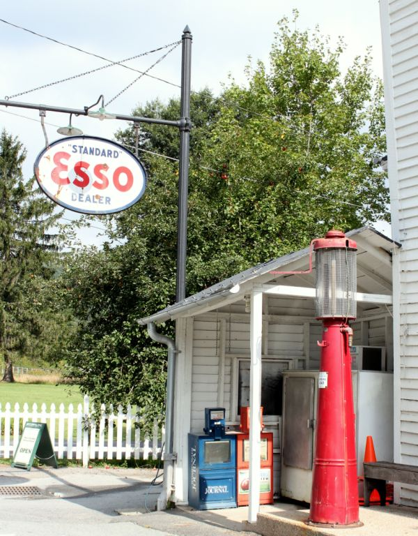
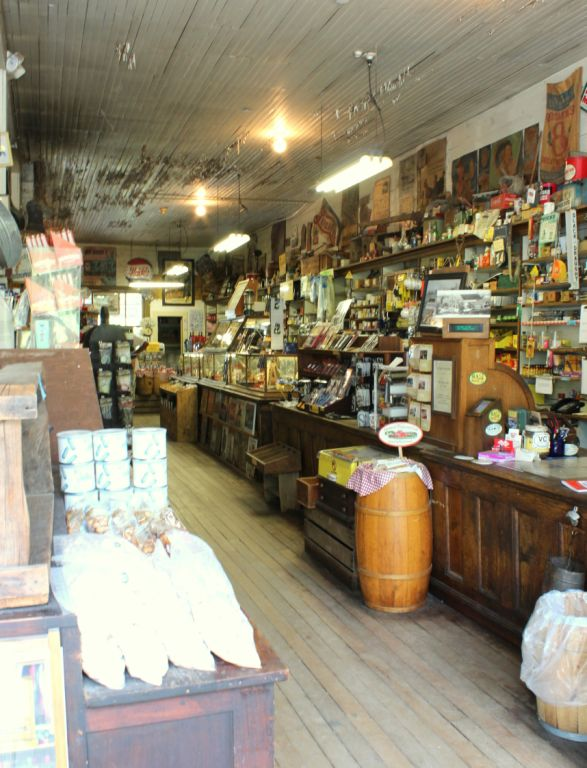

.png)
.PNG)
.PNG)
.PNG)
.PNG)
.PNG)
.JPG)
.JPG)
.PNG)
.PNG)


Before you go any further in this post, let me give you fair warning. This post is VERY country. This is definitely not my typical “style,” but I enjoyed these places nonetheless. So if you don’t think you can take it, turn back now. 🙂
Don’t say I didn’t warn you.
Okay. For those of you who are braving the rest of the post today… I want to share with you the last of the photos from our North Carolina trip. The inn where we stayed was located in Valle Crucis. I had done a post on the tiny village when I wrote my series on Mitford, but it had been a very long time since we had been there. I’ve said before that fictional Absalom Greer’s general store in the Jan Karon Mitford books reminds me of Mast General Store, so I really wanted to return there. It is most certainly a step back in time.

Just the building alone is like going back a century. Look at the cabinets and the floors. They do have a computerized cash register, but is is housed in an antique wooden cabinet. The gentleman working there told me he had to have some modern updates.

Not my best photo, but I did want you to see the table set up for checkers.

One of the reasons I enjoyed the places in this post was because they reminded me of places from my childhood. When I was a little girl and our home was being built, there would be days we would go to the farm to work on clearing the property. We would always stop at a little gas station down the road afterwards to get a snack. I remember they had coolers like these, and that memory immediately came back full force when I walked past this big red Coca Cola cooler.
The Mast General Store has every kind of bottled drink you can imagine. (Our daughter loves Cheerwine, so we brought her home a bottle of it.) They also have every kind of jam or jelly that you can imagine (including moonshine jelly!) We came home with scuppernong jelly and pumpkin butter (but no moonshine.)
The store is on the National Register of Historic Places, and so is the following inn I want you to see…
The Mast Farm Inn. I had read about it, and I had written about it, but we had not been there.
It is very much a farm.
Their gardens are open for touring, and we really enjoyed wandering through them. Everything was just so lusciously green!
On the other side of the highway sits the actual inn and its ancillary buildings that are also available for lodging. This is the loom house in the foreground, and I believe that is the Woodwork Shop behind it – although I am not positive on that. Yes, these are rooms to stay in.
Obviously if we were staying at the Inn at Little Pond Farm, we did not need a room at the Mast Farm Inn, but I have always wanted to dine there. We stopped in very late on a Saturday night hoping that a late dinner reservation might be available, but no luck.
So that left only one option….brunch. Now remember, a wonderful breakfast was included at the inn where we were staying. I love breakfast food, so we decided to have an early breakfast at Little Pond Farm, do our tour of Grandfather Mountain, and come back in time for a late brunch at Mast Farm Inn’s Sunday brunch at Simplicity’s restaurant. It worked out perfectly, and we were hungry for our meal after a little hiking that morning. My husband had their organic garden omelet with smoked gouda grits. (You are seeing heirloom tomatoes in and on the omelet.)
And I was the pig with their Valle Crucis Farmer’s Breakfast. 🙂 The eggs and bacon were very good, but this french fry fanatic here fell in love with their roasted fingerling potatoes. Oh. my. goodness. They tasted so fresh, and the herbs and salt were just perfect. They have a cookbook, and I should have purchased it just to get the recipe for the potatoes.
And of course, since I did not know when we would be returning to the area, we just had to try one of their home made desserts. We were sold on the hummingbird cake when they told us it came with home made ice cream. (Yes, I had already taste tested the raspberry sauce before I took the photo. 🙂 I couldn’t resist.) The cake was very good, and I could easily eat a gallon of that ice cream!
After we finished our brunch, I managed to snap a few photographs of spaces in the inn. This place really reminded me of my grandparents’ house (theirs was much smaller) with its wood ceilings and walls.
This is the Elizabeth Gray Vining room.
And that brings us to the end of the post and the end of our wonderful trip. Thank you so much for coming along on this most country of posts! I hope your Saturday was a fun one perhaps filled with some weekend wandering. The weather here has included a brief taste of fall with lower humidity and cooler temperatures. If yours is as nice as ours, perhaps you can take a Sunday afternoon drive. 🙂
(the truck at Mast Farm Inn)
Enjoy your day! I hope to be back next week with some updates on a few things around the house here.
Until next time…


.PNG)
Kelly, Your visit to the Mast Country Store reminds me of our visit there about 30 years ago. It hasn’t changed at all. And since I’m on a Mitford kick, it could be the old country store that Absalom Greer had a ways out of town. Father Tim visited him a few times at that old country store with the dark wood floors.
———————————————————————–
Oh yes, the old country store with the dark wood floors. The description of Brother Greer’s store in the books matches Mast General Store perfectly (except I don’t recall seeing any room in the back in which someone would live.)
I am glad you got to visit the store long ago.
Kelly
Thank you for letting us tag along on your trip. Loved seeing all the beautiful and interesting places you visited. What a sweet husband for thinking about what you would truly enjoy.
P.S. – True confession….I had to look up what scuppernong is. Thanks, teacher! I learned something. 🙂
———————————————————————
You are more than welcome, Jill! My husband is certainly a sweetie – and a very patient man. Glad you now know what a scuppernong is. Are you familiar with muscadines? If not, look them up too. 🙂 (I like them better.)
Kelly
Love this posting! Great general store! Big fan of those. Of course, I love that vintage truck too. Check out the dining room makeover I just featured – I think you’ll appreciate the interior details clapboard walls, old signs and salvaged wood farm table and there is an old vintage toy truck in there – of course.
Thanks for sharing this posting. It really does remind us of the classic things that we all love and appreciate!
Have a great day!
———————————————————————-
Too funny you commented on this post! When we were in Valle Crucis and I saw the truck, I actually thought of you. That general store there was unbelievable. I have never seen so many different things all together – and to think they have an “annex” too! I loved the dining room makeover you did and all the work by the craftsman who contributed to the project. My husband is working on plans to build some beds for our sons as I am writing this. So I definitely appreciate the work that goes into making something by hand.
Enjoy your weekend.
Kelly
What a beautiful place! What fun you had!Love to see new places to visit and thanks for the photo’s.vicki.
———————————————————————
Valle Crucis is a really neat little community. The Mast General Store even has an “annex” not too far away from its original building. Unfortunately, we did not have time to check it out. If you get to visit, be sure to see it too.
Kelly
Can you imagine the work that goes into those grounds!? Beautiful!!
I want that truck!
———————————————————————
Too much work for me! We can’t even keep up a yard – much less a garden of that size (but they do have a large staff – that’s what we need too!) I would love to have that truck, except I would want it painted red. 🙂
Kelly
Kelly,
The countryside is beautiful and so lush and green in that area. Needless to say, this inn is a little too country for me but still fun to see and the brunch looked delicious.
I always enjoy the tours you take us on. When you retire from teaching you could become a fabulous travel agent! 😀
xo,
Karen
———————————————————————
I need to see if I can duplicate the potatoes from the brunch. You just wouldn’t believe how delicious they were. Glad you enjoy the tours Karen. Being a travel agent would be fun, but only if I got to go on the trips too! (So maybe being a tour guide would be better. LOL)
Kelly
It all looks just wonderful I believe I could live in the old house with the barn in the back, looked good to me, maybe have a sleeping porch.
———————————————————————
Wouldn’t that be fun?! I have always wanted a big barn -not for animals, but for parties! 🙂 Mast Farm Inn had a small room upstairs that had been open, and then they glassed it in to be a small children’s space. It could have been considered a sleeping porch at one time.
Kelly
Your trip just looked like so much fun! I consider this post a part of Americana and I loved it. These sites reminded me of Sunday afternoon drives as a child with my siblings, dad and grandmother. Sounds morbid but dad used to take us ” out in the country” to look at ancestors grave sites. Can’t wait see what your next series of posts will be!!!!
———————————————————————-
Part of Americana…what a great way to describe it! I have never been one to really want to look at grave sites, but when we went to Beaufort it was very interesting to see how long ago some of the people were buried. If you are into history, it would be even better. Sunday afternoon drives are always fun!
Kelly
Well, this post did it!! I made reservations today for next October for a week at Beech Mt. NC to celebrate our 50th wedding anniversary! It is about 18 miles from Boone. Now to finish the Medford series before then!! Thank you, Kelly, for the inspiration and sharing your wanderings with us, your readers. Wondering where you will wander next? Must get a new camera for Christmas!
———————————————————————-
How fantastic, Louvina! A 50th wedding anniversary definitely deserves a weeklong vacation. You will love it, and yes you will want a camera. October should be gloriously beautiful there with the all the leaves in their bright yellows and reds. Be sure to eat at the Mast Farm in Valle Crucis.
Kelly
LOVE country!!!!!!!! This is very, very, very favorite !!!! I live in the country and on a farm, and decorate with antiques…..so were would I love to stay out of all the places you have shown us??? this one, pure country !!! and thanks again!!!!
———————————————————————-
Yes, this one definitely sounds like one you would love Linda! It’s country…on a farm…and filled with antiques. And then there is delicious food and a beautiful garden on top of all of that. Now just go on and make your reservation. 🙂
Kelly
Hope to one day make it there soon!!! It is such a wonderful place where time stands still.
———————————————————————
It was a very long drive from here but definitely worth the trip. I hope you get to visit it too, Shirley.
Kelly
Oh, Kelly, I wish that we lived close enough to visit these places – maybe when my husband retires. Your tours are the next best thing to being there!
———————————————————————-
Susan, you just need to keep a running list of places to visit in retirement. I am glad you are enjoying the trips on the blog. 🙂
Kelly
Don’t apologize for country. Beautiful scenery! I like the old Esso sign. My daughter also loves Cheerwine but not me.
———————————————————————-
How funny about the Cheerwine! I am not a fan of it either like our daughter is. We have it in cans and 2L bottles around here but not the glass bottles like they had in the Mast General Store. I am glad you enjoyed the scenery in the post.
Kelly
I loved your post on Blowing Rock and the Mast General Store IN Valley Crucis. I live 30 minutes from Blowing Rock.. It is such a charming beautiful area. Glad you got to visit this wonderful area of the South. I’m a transplant from California and couldn’t be happier living in NC.
————————————————————————
You moved all the way across the country, Carol! And what a beautiful place you moved to. You are a lucky girl to be living in that area. Glad you loved the post!
Kelly
Oh my goodness, another place for me to visit! I do like country after all! The truck is charming and the Inn is very quaint.
———————————————————————
Yes it is! The list just keeps growing, doesn’t it?! 🙂 Loved that truck too.
Kelly